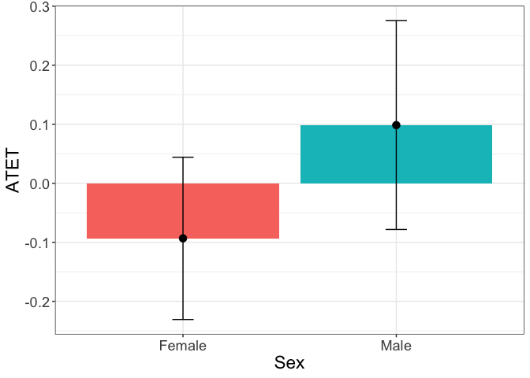
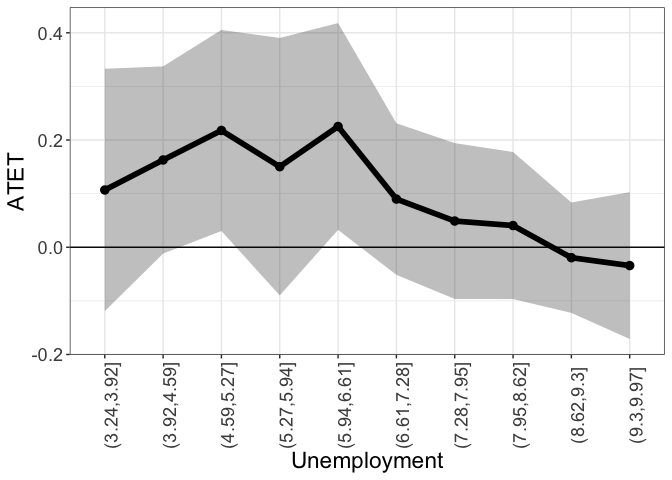
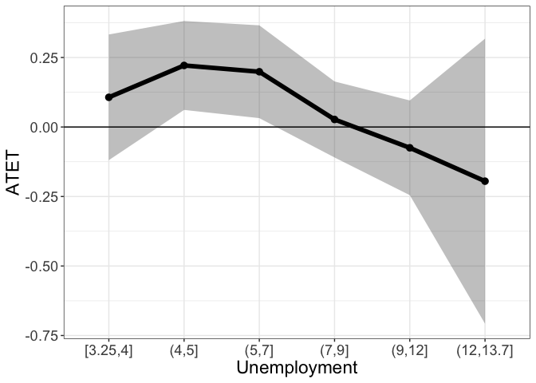
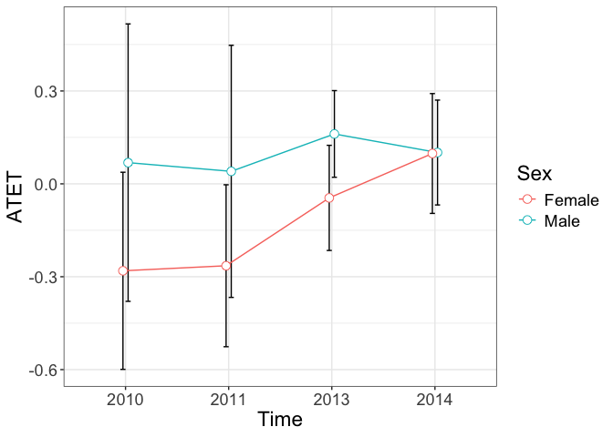
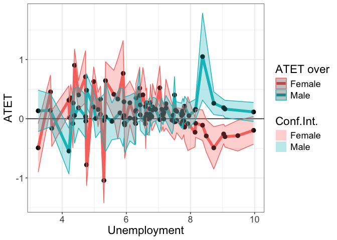
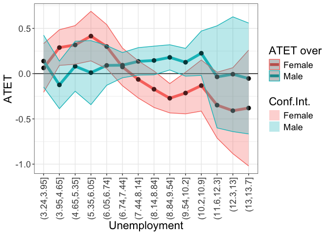

Illustration
Data
The subset of the data from IPUMS is used to illustrate the functionality of the package. The data are available in the package and can be loaded by
library(didnp)
library(tidyverse)
#R> ── Attaching core tidyverse packages ──────────────────────── tidyverse 2.0.0 ──
#R> ✔ dplyr 1.1.4 ✔ readr 2.1.5
#R> ✔ forcats 1.0.0 ✔ stringr 1.5.1
#R> ✔ ggplot2 3.5.1 ✔ tibble 3.2.1
#R> ✔ lubridate 1.9.4 ✔ tidyr 1.3.1
#R> ✔ purrr 1.0.2
#R> ── Conflicts ────────────────────────────────────────── tidyverse_conflicts() ──
#R> ✖ dplyr::filter() masks stats::filter()
#R> ✖ dplyr::lag() masks stats::lag()
#R> ℹ Use the conflicted package (<http://conflicted.r-lib.org/>) to force all conflicts to become errors
data(Unempl, package = "didnp")
head(Unempl)
#R> FT YEAR UNEMP SEX STATEFIP SCHOOL AGE YRIMMIG EDUC AFTER ELIGIBLE
#R> 1 1 2008 5.883333 2 1 1 23 2000 6 0 1
#R> 2 1 2008 5.883333 1 1 1 27 1993 6 0 0
#R> 3 1 2008 5.883333 2 1 1 30 1980 6 0 0
#R> 4 1 2008 5.883333 1 1 1 27 1994 6 0 0
#R> 5 1 2008 5.883333 2 1 1 25 1991 6 0 1
#R> 6 1 2008 6.475000 2 2 1 24 1987 7 0 1The description of the dataset can be found by typing
?Unempl
table(Unempl$age)The variable ELIGIBLE is actually treated. Only those who were eligible before 2012 can be treated. In 2013 and beyond, eligible individuals are treated. Conversely, in 2011 and earlier, they are eligible to be treated starting from 2013.
table(Unempl$YEAR, Unempl$ELIGIBLE)
#R>
#R> 0 1
#R> 2008 848 1506
#R> 2009 816 1563
#R> 2010 851 1593
#R> 2011 779 1571
#R> 2013 747 1377
#R> 2014 707 1349
#R> 2015 623 1227
#R> 2016 629 1196For convenience, a data said with a smaller number of variables is created
d2 <- data.frame(
y = as.numeric(Unempl$FT),
year = Unempl$YEAR,
unemp = Unempl$UNEMP,
sex = factor(Unempl$SEX),
age = ordered(Unempl$AGE),
yrimmig = ordered(Unempl$YRIMMIG),
educ = ordered(Unempl$EDUC),
treatment_period = as.numeric(Unempl$AFTER),
treated = as.numeric(Unempl$ELIGIBLE)
)There is a gap in the year
table(d2$year)
#R>
#R> 2008 2009 2010 2011 2013 2014 2015 2016
#R> 2354 2379 2444 2350 2124 2056 1850 1825Year 2012 is missing. This is when the treatment occurred. A variable ‘t’ is generated, where
| Year | t |
|---|---|
| 2008 | -3 |
| 2009 | -2 |
| 2010 | -1 |
| 2011 | 0 |
| 2013 | 1 |
| 2014 | 2 |
| 2015 | 3 |
| 2016 | 4 |
An artificial variable period that does not have a gap is generated, where
| Year | period |
|---|---|
| 2008 | 1 |
| 2009 | 2 |
| 2010 | 3 |
| 2011 | 4 |
| 2013 | 5 |
| 2014 | 6 |
| 2015 | 7 |
| 2016 | 8 |
To make the same more homogeneous and smaller for illustrative purposes, the subsample of the data with the following conditions is created:
yrimmig >= 1982 & yrimmig <= 1994educ >= 6 & educ <= 11
year_min <- min(Unempl$YEAR)
d0 <- d2 %>%
filter(yrimmig >= 1982 & yrimmig <= 1994) |>
filter(educ >= 6 & educ <= 11) |>
mutate(
yrimmig = droplevels(yrimmig),
educ = droplevels(educ),
age = droplevels(age)
) |>
mutate(period = dplyr::if_else(year < 2012,
year - year_min + 1,
year - year_min),
t = period - min(period[treatment_period == 1]-1))
table(d0$period)
#R>
#R> 1 2 3 4 5 6 7 8
#R> 1539 1589 1628 1624 1453 1364 1184 1217Here is a basic description of the data
Treated over time
table(d0$year, d0$treated)
#R>
#R> 0 1
#R> 2008 655 884
#R> 2009 620 969
#R> 2010 641 987
#R> 2011 612 1012
#R> 2013 587 866
#R> 2014 540 824
#R> 2015 464 720
#R> 2016 489 728
table(d0$t, d0$treated)
#R>
#R> 0 1
#R> -3 655 884
#R> -2 620 969
#R> -1 641 987
#R> 0 612 1012
#R> 1 587 866
#R> 2 540 824
#R> 3 464 720
#R> 4 489 728Recoded variable t
table(d0$t, d0$year)
#R>
#R> 2008 2009 2010 2011 2013 2014 2015 2016
#R> -3 1539 0 0 0 0 0 0 0
#R> -2 0 1589 0 0 0 0 0 0
#R> -1 0 0 1628 0 0 0 0 0
#R> 0 0 0 0 1624 0 0 0 0
#R> 1 0 0 0 0 1453 0 0 0
#R> 2 0 0 0 0 0 1364 0 0
#R> 3 0 0 0 0 0 0 1184 0
#R> 4 0 0 0 0 0 0 0 1217Treated by the year of immigration
table(d0$yrimmig, d0$treated)
#R>
#R> 0 1
#R> 1982 165 126
#R> 1983 158 196
#R> 1984 169 303
#R> 1985 297 448
#R> 1986 252 482
#R> 1987 209 393
#R> 1988 298 587
#R> 1989 509 876
#R> 1990 755 1019
#R> 1991 434 621
#R> 1992 561 649
#R> 1993 424 623
#R> 1994 377 667Treated by education
table(d0$educ, d0$treated)
#R>
#R> 0 1
#R> 6 3436 4658
#R> 7 703 1352
#R> 8 228 489
#R> 10 196 437
#R> 11 45 54Treated by age
table(d0$treated, d0$age)
#R>
#R> 22 23 24 25 26 27 28 29 30 31 32 33 34 35 36 37 38 39
#R> 0 0 0 0 0 0 72 233 365 609 502 474 457 408 451 470 300 200 67
#R> 1 86 281 514 699 753 737 761 681 733 615 506 350 214 60 0 0 0 0Although this can be done on the fly, the subsample can be prepared beforehand:
# get the subsample
d0 <- d0 %>%
mutate(smpl = year >= 2010 & year <= 2014)
table(d0$smpl)
#R>
#R> FALSE TRUE
#R> 5529 6069Define the formula that we will use:
form1 <- y ~ age + educ + sex + unemp | period | treated | treatment_periodTo obtain standard errors and perform testing in this illustration,
we will use a few number of bootstrap replicaitons here, but we advise to set
boot.num = 399or larger in an application.
B <- 99Testing
To test if there is a violation of the bias stability condition use command didnptest
tym1test <- didnpbsctest(
form1,
data = d0,
subset = smpl,
boot.num = B,
print.level = 2,
cores = 10)
#R> Warning in didnpbsctest.default(outcome = Y, regressors = X, time = time, :
#R> Data starts in 3, while the treatment is in 4
#R> Number of Observations is 6069
#R>
#R> Number of observations in treated group right after the treatment (N_ 1, 1) = 866
#R> Number of observations in treated group just before the treatment (N_ 1, 0) = 1012
#R> Number of observations in treated group one period before the treatment (N_ 1,-1) = 987
#R> Number of observations in control group right after the treatment (N_ 0, 1) = 587
#R> Number of observations in control group just before the treatment (N_ 0, 0) = 612
#R> Number of observations in control group one period before the treatment (N_ 0,-1) = 641
#R>
#R> Number of Continuous Regressors = 1
#R> Number of Unordered Categorical Regressors = 1
#R> Number of Ordered Categorical Regressors = 2
#R>
#R> Bandwidths are chosen via the plug-in method
#R>
#R> Calculating BSC
#R> BSC = 0.2248732862
#R> Calculating BSC completed in 0 seconds
#R>
#R> Bootstrapping the statistic (99 replications)
#R> Calculating residuals for the alternative model
#R> Calculating residuals for the alternative model completed in 0 seconds
#R> Calculating fitted values under the null hypothesis
#R> Calculating fitted values under the null hypothesis completed in 0 seconds
#R>
#R> The main loop of the bootstrapping started
#R>
#R> Bootstrapping will take approximately: 5 seconds
#R>
#R> | |= | 1% | |= | 2% | |== | 3% | |=== | 4% | |==== | 5% | |==== | 6% | |===== | 7% | |====== | 8% | |====== | 9% | |======= | 10% | |======== | 11% | |========= | 12% | |========= | 13% | |========== | 14% | |=========== | 15% | |=========== | 16% | |============ | 17% | |============= | 18% | |============== | 19% | |============== | 20% | |=============== | 21% | |================ | 22% | |================ | 23% | |================= | 24% | |================== | 26% | |=================== | 27% | |=================== | 28% | |==================== | 29% | |===================== | 30% | |===================== | 31% | |====================== | 32% | |======================= | 33% | |======================== | 34% | |======================== | 35% | |========================= | 36% | |========================== | 37% | |========================== | 38% | |=========================== | 39% | |============================ | 40% | |============================= | 41% | |============================= | 42% | |============================== | 43% | |=============================== | 44% | |=============================== | 45% | |================================ | 46% | |================================= | 47% | |================================== | 48% | |================================== | 49% | |=================================== | 50% | |==================================== | 51% | |==================================== | 52% | |===================================== | 53% | |====================================== | 54% | |======================================= | 55% | |======================================= | 56% | |======================================== | 57% | |========================================= | 58% | |========================================= | 59% | |========================================== | 60% | |=========================================== | 61% | |============================================ | 62% | |============================================ | 63% | |============================================= | 64% | |============================================== | 65% | |============================================== | 66% | |=============================================== | 67% | |================================================ | 68% | |================================================= | 69% | |================================================= | 70% | |================================================== | 71% | |=================================================== | 72% | |=================================================== | 73% | |==================================================== | 74% | |===================================================== | 76% | |====================================================== | 77% | |====================================================== | 78% | |======================================================= | 79% | |======================================================== | 80% | |======================================================== | 81% | |========================================================= | 82% | |========================================================== | 83% | |=========================================================== | 84% | |=========================================================== | 85% | |============================================================ | 86% | |============================================================= | 87% | |============================================================= | 88% | |============================================================== | 89% | |=============================================================== | 90% | |================================================================ | 91% | |================================================================ | 92% | |================================================================= | 93% | |================================================================== | 94% | |================================================================== | 95% | |=================================================================== | 96% | |==================================================================== | 97% | |===================================================================== | 98% | |===================================================================== | 99% | |======================================================================| 100%
#R> Bootstrapping the statistic completed in 5 seconds
#R> p.value:
#R> [1] 0.12
#R>
#R> BSC statistic = 0.2249
#R> BSC bootstrapped standard error = 0.03158
#R> Bootstrapped p-value = 0.12Interpretation: We do find evidence against the null hypothesis that the bias stability condition holds. The desired p-value should be much larger than the 0.1 level.
Estimation
To estimate the average treatment effects, we use the didnpreg function. The didnpreg function allows using matrices. The manual explains how to use matrix syntax (type ?didnpreg).
To speed up the estimation
on computers with multiple cores, use multiplrocessing by setting option
cores.
Suppress output by setting print.level = 0. The default value is 1.
# suppress output
tym1a <- didnpreg(
form1,
data = d0,
subset = smpl,
bwmethod = "opt",
boot.num = B,
TTx = "TTa",
print.level = 2,
digits = 8,
cores = 10)
#R> Warning in didnpreg.default(outcome = Y, regressors = X, time = time, treated =
#R> treated, : Data starts in 3, while the treatment is in 4
#R> Number of observations = 6069
#R> Number of observations in the year of the treatment and one year after the treatment = 3077
#R>
#R> Number of observations in treated group after the treatment (N_ 1, 1) = 1690
#R> Number of observations in treated group before the treatment (N_ 1, 0) = 1999
#R> Number of observations in control group after the treatment (N_ 0, 1) = 1127
#R> Number of observations in control group before the treatment (N_ 0, 0) = 1253
#R>
#R> Number of Continuous Regressors = 1
#R> Number of Unordered Categorical Regressors = 1
#R> Number of Ordered Categorical Regressors = 2
#R>
#R> Bandwidths are chosen via the plug-in method
#R>
#R> Regressor Type Bandwidth
#R> 1 age ordered 9.356700e-05
#R> 2 educ ordered 9.049838e-05
#R> 3 sex factor 5.909937e-04
#R> 4 unemp continuous 2.397334e-01
#R>
#R> Calculating ATET: TTa
#R> TTa = 0.076863646, N (TTa; treated in the first period or N_ 1, 1) = 1690
#R> Calculating ATET completed in 0 seconds
#R>
#R> Bootstrapping standard errors (99 replications)
#R> Calculating residuals completed
#R>
#R> Bootstrapping will take approximately: 4 seconds
#R>
#R> | |= | 1% | |= | 2% | |== | 3% | |=== | 4% | |==== | 5% | |==== | 6% | |===== | 7% | |====== | 8% | |====== | 9% | |======= | 10% | |======== | 11% | |========= | 12% | |========= | 13% | |========== | 14% | |=========== | 15% | |=========== | 16% | |============ | 17% | |============= | 18% | |============== | 19% | |============== | 20% | |=============== | 21% | |================ | 22% | |================ | 23% | |================= | 24% | |================== | 26% | |=================== | 27% | |=================== | 28% | |==================== | 29% | |===================== | 30% | |===================== | 31% | |====================== | 32% | |======================= | 33% | |======================== | 34% | |======================== | 35% | |========================= | 36% | |========================== | 37% | |========================== | 38% | |=========================== | 39% | |============================ | 40% | |============================= | 41% | |============================= | 42% | |============================== | 43% | |=============================== | 44% | |=============================== | 45% | |================================ | 46% | |================================= | 47% | |================================== | 48% | |================================== | 49% | |=================================== | 50% | |==================================== | 51% | |==================================== | 52% | |===================================== | 53% | |====================================== | 54% | |======================================= | 55% | |======================================= | 56% | |======================================== | 57% | |========================================= | 58% | |========================================= | 59% | |========================================== | 60% | |=========================================== | 61% | |============================================ | 62% | |============================================ | 63% | |============================================= | 64% | |============================================== | 65% | |============================================== | 66% | |=============================================== | 67% | |================================================ | 68% | |================================================= | 69% | |================================================= | 70% | |================================================== | 71% | |=================================================== | 72% | |=================================================== | 73% | |==================================================== | 74% | |===================================================== | 76% | |====================================================== | 77% | |====================================================== | 78% | |======================================================= | 79% | |======================================================== | 80% | |======================================================== | 81% | |========================================================= | 82% | |========================================================== | 83% | |=========================================================== | 84% | |=========================================================== | 85% | |============================================================ | 86% | |============================================================= | 87% | |============================================================= | 88% | |============================================================== | 89% | |=============================================================== | 90% | |================================================================ | 91% | |================================================================ | 92% | |================================================================= | 93% | |================================================================== | 94% | |================================================================== | 95% | |=================================================================== | 96% | |==================================================================== | 97% | |===================================================================== | 98% | |===================================================================== | 99% | |======================================================================| 100%
#R> Bootstrapping standard errors completed in 4 seconds
#R>
#R> TTa bootstrapped standard error = 0.078028831
#R>
#R> Bootstrapped confidence interval:
#R>
#R> Coef. SE [95% confidence interval]
#R> ATET (TTa) 0.07686365 0.07802883 -0.08571281 0.20219651
#R>
#R>
#R> p-value and confidence interval assuming ATET (TTa) is normally distributed:
#R>
#R> Coef. SE z P>|z| [95% confidence interval]
#R> ATET (TTa) 0.07686365 0.07802883 0.99 0.32459103 -0.07607005 0.22979734didnpreg returns a class didnp object. This object contains estimates of the average treatment effects and their standard errors. To see these, we can call the summary function.
# Print the summary of estimation
summary(tym1a)
#R> Number of Observations = 6069
#R> Number of observations in the year of the treatment and one year after the treatment = 6069
#R>
#R> Number of observations in treated group right after the treatment (N_11) = 1690
#R> Number of observations in treated group just before the treatment (N_10) = 1999
#R> Number of observations in control group right after the treatment (N_01) = 1127
#R> Number of observations in control group just before the treatment (N_00) = 1253
#R>
#R> Number of Continuous Regressors = 1
#R> Number of Unordered Categorical Regressors = 1
#R> Number of Ordered Categorical Regressors = 2
#R>
#R> Bandwidths are chosen via the plug-in method
#R>
#R> Regressor Type Bandwidth
#R> 1 age ordered 9.356700e-05
#R> 2 educ ordered 9.049838e-05
#R> 3 sex factor 5.909937e-04
#R> 4 unemp continuous 2.397334e-01
#R>
#R> Unconditional Treatment Effect on the Treated (ATET):
#R>
#R> TTa = 0.07686
#R> TTa sd = 0.07803
#R> N(TTa) = 1690
#R> Bootstrapped 95% confidence interval: [-0.0857, 0.2022]
#R>
#R> p-value and confidence interval assuming ATET is normally distributed:
#R>
#R> Coef. SE z P>|z| [95% confidence interval]
#R> ATET 0.0769 0.0780 0.99 0.3246 -0.0761 0.2298
rm(tym1a)Estimating will take longer. The bandwidths are cross-validated.
# Show output as the estimation goes
tym1b <- didnpreg(
form1,
data = d0,
subset = smpl,
bwmethod = "CV",
boot.num = B,
TTx = "TTb",
print.level = 2,
digits = 4,
cores = 10)
#R> Warning in didnpreg.default(outcome = Y, regressors = X, time = time, treated =
#R> treated, : Data starts in 3, while the treatment is in 4
#R> Number of observations = 6069
#R>
#R> Number of observations in treated group after the treatment (N_ 1, 1) = 1690
#R> Number of observations in treated group before the treatment (N_ 1, 0) = 1999
#R> Number of observations in control group after the treatment (N_ 0, 1) = 1127
#R> Number of observations in control group before the treatment (N_ 0, 0) = 1253
#R>
#R> Number of Continuous Regressors = 1
#R> Number of Unordered Categorical Regressors = 1
#R> Number of Ordered Categorical Regressors = 2
#R>
#R> Calculating cross-validated bandwidths
#R> Kernel Type for Continuous Regressors is Gaussian
#R> Kernel Type for Unordered Categorical Regressors is Aitchison and Aitken
#R> Kernel Type for Ordered Categorical is Li and Racine
#R> Calculating cross-validated bandwidths completed in 1 second
#R>
#R> Regressor Type Bandwidth
#R> 1 age ordered 0.10774737
#R> 2 educ ordered 0.05637391
#R> 3 sex factor 0.05638123
#R> 4 unemp continuous 0.25507958
#R>
#R> Calculating ATET: TTb
#R> TTb = -0.01958, N (TTb; all treated) = 3689
#R> Calculating ATET completed in 0 seconds
#R>
#R> Bootstrapping standard errors (99 replications)
#R> Calculating residuals completed
#R>
#R> Bootstrapping will take approximately: 8 seconds
#R>
#R> | |= | 1% | |= | 2% | |== | 3% | |=== | 4% | |==== | 5% | |==== | 6% | |===== | 7% | |====== | 8% | |====== | 9% | |======= | 10% | |======== | 11% | |========= | 12% | |========= | 13% | |========== | 14% | |=========== | 15% | |=========== | 16% | |============ | 17% | |============= | 18% | |============== | 19% | |============== | 20% | |=============== | 21% | |================ | 22% | |================ | 23% | |================= | 24% | |================== | 26% | |=================== | 27% | |=================== | 28% | |==================== | 29% | |===================== | 30% | |===================== | 31% | |====================== | 32% | |======================= | 33% | |======================== | 34% | |======================== | 35% | |========================= | 36% | |========================== | 37% | |========================== | 38% | |=========================== | 39% | |============================ | 40% | |============================= | 41% | |============================= | 42% | |============================== | 43% | |=============================== | 44% | |=============================== | 45% | |================================ | 46% | |================================= | 47% | |================================== | 48% | |================================== | 49% | |=================================== | 50% | |==================================== | 51% | |==================================== | 52% | |===================================== | 53% | |====================================== | 54% | |======================================= | 55% | |======================================= | 56% | |======================================== | 57% | |========================================= | 58% | |========================================= | 59% | |========================================== | 60% | |=========================================== | 61% | |============================================ | 62% | |============================================ | 63% | |============================================= | 64% | |============================================== | 65% | |============================================== | 66% | |=============================================== | 67% | |================================================ | 68% | |================================================= | 69% | |================================================= | 70% | |================================================== | 71% | |=================================================== | 72% | |=================================================== | 73% | |==================================================== | 74% | |===================================================== | 76% | |====================================================== | 77% | |====================================================== | 78% | |======================================================= | 79% | |======================================================== | 80% | |======================================================== | 81% | |========================================================= | 82% | |========================================================== | 83% | |=========================================================== | 84% | |=========================================================== | 85% | |============================================================ | 86% | |============================================================= | 87% | |============================================================= | 88% | |============================================================== | 89% | |=============================================================== | 90% | |================================================================ | 91% | |================================================================ | 92% | |================================================================= | 93% | |================================================================== | 94% | |================================================================== | 95% | |=================================================================== | 96% | |==================================================================== | 97% | |===================================================================== | 98% | |===================================================================== | 99% | |======================================================================| 100%
#R> Bootstrapping standard errors completed in 8 seconds
#R>
#R> TTb bootstrapped standard error = 0.1137
#R>
#R> Bootstrapped confidence interval:
#R>
#R> Coef. SE [95% confidence interval]
#R> ATET (TTb) -0.0196 0.1137 -0.1739 0.2285
#R>
#R>
#R> p-value and confidence interval assuming ATET (TTb) is normally distributed:
#R>
#R> Coef. SE z P>|z| [95% confidence interval]
#R> ATET (TTb) -0.0196 0.1137 -0.17 0.8633 -0.2423 0.2032Understanding [sub]samples
To work with the results for the plot,
didnpregproduces binary variables indicating different samples.
The estimation sample is captured by the esample value, which is equal to 1 if this observation was used in the estimation and 0 otherwise:
table(
d0$year[tym1b$esample],
d0$treated[tym1b$esample]
)
#R>
#R> 0 1
#R> 2010 641 987
#R> 2011 612 1012
#R> 2013 587 866
#R> 2014 540 824The value sample1 indicates all treated (before and after treatment) observations in the estimation sample esample. To subset the treated observations in the original dataset, double subsetting is required.
table(
d0$year[tym1b$esample][tym1b$sample1],
d0$treated[tym1b$esample][tym1b$sample1]
)
#R>
#R> 1
#R> 2010 987
#R> 2011 1012
#R> 2013 866
#R> 2014 824The value sample11 indicates the treated observations in the post-treatment period in the estimation sample esample. To subset the treated observations in the original dataset, double subsetting is required.
table(
d0$year[tym1b$esample][tym1b$sample11],
d0$treated[tym1b$esample][tym1b$sample11]
)
#R>
#R> 1
#R> 2013 866
#R> 2014 824
# or the same in case TTx = "TTa" was used by the 'didnpreg' command
table(
d0$year[tym1b$esample][tym1b$sample1][tym1b$TTa.positions.in.TTb],
d0$treated[tym1b$esample][tym1b$sample1][tym1b$TTa.positions.in.TTb]
)
#R>
#R> 1
#R> 2013 866
#R> 2014 824The values of the individual TEs can be put to the dataset using double subsetting for TTb
d0$TTbi[tym1b$esample][tym1b$sample1] <- tym1b$TTb.i
d0 %>%
group_by(year) %>%
summarize(mean = mean(TTbi, na.rm = TRUE))
#R> # A tibble: 8 × 2
#R> year mean
#R> <int> <dbl>
#R> 1 2008 NaN
#R> 2 2009 NaN
#R> 3 2010 -0.0907
#R> 4 2011 -0.112
#R> 5 2013 0.0595
#R> 6 2014 0.0959
#R> 7 2015 NaN
#R> 8 2016 NaNor TTa
d0$TTai[tym1b$esample][tym1b$sample11] <- tym1b$TTa.i
d0 %>%
group_by(year) %>%
summarize(mean = mean(TTai, na.rm = TRUE))
#R> # A tibble: 8 × 2
#R> year mean
#R> <int> <dbl>
#R> 1 2008 NaN
#R> 2 2009 NaN
#R> 3 2010 NaN
#R> 4 2011 NaN
#R> 5 2013 0.0595
#R> 6 2014 0.0959
#R> 7 2015 NaN
#R> 8 2016 NaNJust a remainder that TTa calculates the ATET in the post-treatment period, while TTb calculated the ATET in both prior and post-treatment periods.
Plotting Heterogenous Treatment Effects
To plot the heterogenous treatment effects, use the didnpplot command.
The heterogenous treatment effects can be plotted
byeither continuous or categorical variable. They can also also be plottedbyeither continuous or categorical variableoveranother categorical variable.
‘by’: factor
education
The heterogenous treatment effects are plotted for each level of education, since the education is a categorical variable.
tym1b_gr_educ <- didnpplot(
obj = tym1b,
level = 95,
by = d0$educ[tym1b$esample][tym1b$sample1],
xlab = "Education",
ylab = "ATET"
)
#R> [1] "1. 'by' is catergorical"
#R> [1] "1.1 TTa + TTb"
#R> [1] "1.1.1.1 TTb"
# A
tym1b_gr_educ$data.a
#R> atet atet.sd count by
#R> 1 0.081591779 0.06332622 1099 6
#R> 2 0.115493332 0.09538682 315 7
#R> 3 -0.006376054 0.18621308 146 8
#R> 4 0.093951311 0.17350685 108 10
#R> 5 -0.212163701 0.15906875 22 11
tym1b_gr_educ$plot.a
# B
tym1b_gr_educ$data.b
#R> atet atet.sd count by
#R> 1 -0.02439588 0.1285465 2431 6
#R> 2 -0.05993423 0.1416348 731 7
#R> 3 0.01949751 0.1685300 250 8
#R> 4 0.13360339 0.1999141 238 10
#R> 5 -0.14795599 0.1519865 39 11
tym1b_gr_educ$plot.b
# ggsave(paste0("atet_ci_education.pdf"), width = 15, height = 10, units = c("cm"))Here objects data.a and data.b contain data that is used to produce plot.a and plot.b. The graphs are ggplot objects and can be amended further.
time
The heterogenous treatment effects over time show that the effect is significant in the second year after the treatment.
Note that the graph shows the 90% confidence interval bygiving the option
level = 90.
tym1b_gr_time <- didnpplot(
obj = tym1b,
level = 90,
by = factor(d0$t)[tym1b$esample][tym1b$sample1],
xlab = "Time",
ylab = "ATET"
)
#R> [1] "1. 'by' is catergorical"
#R> [1] "1.1 TTa + TTb"
#R> [1] "1.1.1.1 TTb"
# A
tym1b_gr_time$data.a
#R> atet atet.sd count by
#R> 1 NaN NA 0 -1
#R> 2 NaN NA 0 0
#R> 3 0.05952727 0.05787608 866 1
#R> 4 0.09593129 0.06137911 824 2
tym1b_gr_time$plot.a
#R> Warning: Removed 2 rows containing missing values or values outside the scale range
#R> (`geom_bar()`).
#R> Warning: Removed 2 rows containing missing values or values outside the scale range
#R> (`geom_point()`).
# B
tym1b_gr_time$data.b
#R> atet atet.sd count by
#R> 1 -0.09065350 0.20887916 987 -1
#R> 2 -0.11199566 0.18369373 1012 0
#R> 3 0.05952727 0.05787608 866 1
#R> 4 0.09593129 0.06137911 824 2
tym1b_gr_time$plot.b
# ggsave(paste0("atet_ci_time.pdf"), width = 15, height = 10, units = c("cm"))sex
Another example is the graph with the heterogenous treatment effects by sex:
tym1b_gr_sex <- didnpplot(
obj = tym1b,
level = 95,
by = d0$sex[tym1b$esample][tym1b$sample1],
xlab = "Sex",
ylab = "ATET",
by.labels.values = data.frame(c("1","2"), c("Male", "Female"))
)
#R> [1] "1. 'by' is catergorical"
#R> [1] "1.1 TTa + TTb"
#R> [1] "1.1.1.1 TTb"
# A
tym1b_gr_sex$data.a
#R> atet atet.sd count by byold
#R> 1 0.12242162 0.06007820 830 Male 1
#R> 2 0.03370704 0.08595082 860 Female 2
tym1b_gr_sex$plot.a
# B
tym1b_gr_sex$data.b
#R> atet atet.sd count by byold
#R> 1 0.1083980 0.1481050 1820 Male 1
#R> 2 -0.1441953 0.1098045 1869 Female 2
tym1b_gr_sex$plot.b
# ggsave(paste0("atet_ci_sex.pdf"), width = 15, height = 10, units = c("cm"))‘by’ continuous: unemp
When the ‘by’ variable is continuous (the didnpplot command will recognize if by is a continuous variable) the didnpplot offers three ways of plotting the heterogeneous treatment effects.
Scale of the continuous ‘by’ is its range
If by.continuous.scale is not specified, didnpplot will use each unique value in the by variable to produce the plot, which can be pretty rugged.
tym1b_gr_unemp_each_value <- didnpplot(
obj = tym1b,
level = 95,
by = d0$unemp[tym1b$esample][tym1b$sample1],
xlab = "Unemployment",
ylab = "ATET",
add.zero.line = FALSE
)
#R> [1] "2. 'by' is continuous"
#R> [1] "Scale of the continuous 'by' is its range"
#R> [1] "2.1 TTa + TTb"
#R> [1] "2.1.1 only 'by'"
#R> [1] "2.1.1.1 TTb"
#R> [1] "2.1.1.2 TTa"
# A
head(tym1b_gr_unemp_each_value$data.a, 10)
#R> by atet atet.sd count bySorted
#R> 1 3.250000 -0.19049195 0.2161804 5 11
#R> 2 3.633333 0.19263242 0.1690250 12 12
#R> 3 3.675000 -0.23194790 0.2447511 2 13
#R> 4 4.208333 -0.03449124 0.1727407 8 14
#R> 5 4.225000 -0.01457554 0.2121095 2 15
#R> 6 4.266667 0.32313251 0.1950907 3 16
#R> 7 4.333333 -0.12309935 0.3502840 2 17
#R> 8 4.341667 0.25388070 0.1506456 2 18
#R> 9 4.383333 0.46391603 0.1774537 2 19
#R> 10 4.508333 0.34287349 0.1500529 4 20
tym1b_gr_unemp_each_value$plot.a
# B
head(tym1b_gr_unemp_each_value$data.b, 10)
#R> by atet atet.sd count bySorted
#R> 90 8.158333 0.060637426 0.08137038 22 100
#R> 91 8.166667 -0.004659572 0.11547780 7 101
#R> 92 8.191667 -0.021635638 0.09107322 212 102
#R> 93 8.358333 -0.064491354 0.10115288 11 103
#R> 94 8.375000 0.204438487 0.18313476 4 104
#R> 95 8.491667 -0.287098972 0.18280296 1 105
#R> 96 8.500000 0.007956669 0.14797002 1 106
#R> 97 8.525000 -0.112077329 0.08969210 21 107
#R> 98 8.641667 0.352642084 0.19274900 2 108
#R> 99 8.658333 -0.302495127 0.30617757 1 109
tym1b_gr_unemp_each_value$plot.b
# ggsave(paste0("atet_ci_unemp_numeric.pdf"), width = 15, height = 10, units = c("cm"))Ameding ggplot object is easy. For example adding a 0 horizontal line is
tym1b_gr_unemp_each_value$plot.a +
geom_hline(yintercept = 0)
Anternatively, one can use the
data.aanddata.bobjects to plot from scratch.
Scale of the continuous ‘by’ intervals
Setting by.continuous.scale to a single number, instructs didnpplot to split the range of the continuous by variable into the number of intervals specified by by.continuous.scale and plot ATET by intervals.
tym1b_gr_unemp_n_intervals <- didnpplot(
obj = tym1b,
level = 95,
by = d0$unemp[tym1b$esample][tym1b$sample1],
by.continuous.scale = 10,
xaxis.label.angle = 90,
xlab = "Unemployment",
ylab = "ATET",
by.labels.values = data.frame(c("1","2"), c("Male", "Female"))
)
#R> [1] "2. 'by' is continuous"
#R> [1] "Scale of the continuous 'by' is determined by the number of intervals 'by.continuous.scale'"
#R> [1] "2.1 TTa + TTb"
#R> [1] "2.1.1 only 'by'"
#R> [1] "2.1.1.1 TTb"
#R> [1] "2.1.1.2 TTa"
# A
tym1b_gr_unemp_n_intervals$data.a
#R> by atet atet.sd count bySorted
#R> 1 (3.24,3.92] 0.04711755 0.17815925 19 11
#R> 2 (3.92,4.59] 0.14022632 0.15460251 23 12
#R> 3 (4.59,5.27] 0.20393764 0.10766894 183 13
#R> 4 (5.27,5.94] 0.14916172 0.10888059 31 14
#R> 5 (5.94,6.61] 0.24172149 0.10871902 235 15
#R> 6 (6.61,7.28] 0.09215862 0.08770587 155 16
#R> 7 (7.28,7.95] 0.04912287 0.08268264 497 17
#R> 8 (7.95,8.62] 0.04168082 0.07661893 38 18
#R> 9 (8.62,9.3] -0.02332736 0.07228854 475 19
#R> 10 (9.3,9.97] -0.04334175 0.08966787 34 20
tym1b_gr_unemp_n_intervals$plot.a
# B
tym1b_gr_unemp_n_intervals$data.b
#R> by atet atet.sd count bySorted
#R> 4 (3.24,4.3] 0.0487359376 0.16684441 32 11
#R> 5 (4.3,5.35] 0.1939881540 0.10777568 196 12
#R> 6 (5.35,6.39] 0.2576802413 0.11089420 236 13
#R> 7 (6.39,7.44] 0.1041843329 0.08659005 233 14
#R> 8 (7.44,8.49] 0.0241646891 0.07708997 984 15
#R> 9 (8.49,9.54] -0.0382384057 0.07223487 647 16
#R> 10 (9.54,10.6] 0.0002260922 0.11006929 231 17
#R> 1 (10.6,11.6] 0.0182540261 0.18889706 53 18
#R> 2 (11.6,12.7] -0.1795941168 0.34013474 1032 19
#R> 3 (12.7,13.7] -0.2578154370 0.40214556 45 20
tym1b_gr_unemp_n_intervals$plot.b
# ggsave(paste0("atet_ci_unemp_intervals.pdf"), width = 15, height = 10, units = c("cm"))Scale of the continuous ‘by’ a vector
Setting by.continuous.scale to a single number, instructs didnpplot to split the range of the continuous by variable into intervals defined by the specified vector and plot ATET by intervals.
tym1b_gr_unemp_vector_breaks <- didnpplot(
obj = tym1b,
level = 95,
by = d0$unemp[tym1b$esample][tym1b$sample1],
by.continuous.scale = c(2, 3, 4, 5, 7, 9, 12),
xlab = "Unemployment",
ylab = "ATET",
by.labels.values = data.frame(c("1","2"), c("Male", "Female"))
)
#R> [1] "2. 'by' is continuous"
#R> [1] "Scale of the continuous 'by' is determined by the vector in 'by.continuous.scale'"
#R> [1] "2.1 TTa + TTb"
#R> [1] "2.1.1 only 'by'"
#R> [1] "2.1.1.1 TTb"
#R> [1] "2.1.1.2 TTa"
# A
tym1b_gr_unemp_vector_breaks$data.a
#R> by atet atet.sd count bySorted
#R> 5 [3.25,4] 0.04711755 0.17815925 19 11
#R> 1 (4,5] 0.22313076 0.12660411 42 12
#R> 2 (5,7] 0.19931725 0.08651265 512 13
#R> 3 (7,9] 0.05048265 0.08050934 611 14
#R> 4 (9,9.97] -0.02483015 0.07205712 506 15
tym1b_gr_unemp_vector_breaks$plot.a
# B
tym1b_gr_unemp_vector_breaks$data.b
#R> by atet atet.sd count bySorted
#R> 6 [3.25,4] 0.04711755 0.1781593 19 11
#R> 2 (4,5] 0.20096410 0.1286259 43 12
#R> 3 (5,7] 0.19979684 0.0870223 538 13
#R> 4 (7,9] 0.02297749 0.0757428 1153 14
#R> 5 (9,12] -0.08431108 0.1464915 1407 15
#R> 1 (12,13.7] -0.18357535 0.3746480 529 16
tym1b_gr_unemp_vector_breaks$plot.b
# ggsave(paste0("atet_ci_unemp_breaks.pdf"), width = 15, height = 10, units = c("cm"))‘by’: factor + ’over
The heterogeneous treatment effects can be plotted by either continuous or categorical variable over a categorical variable.
‘by’: sex; ‘over’ is time
This is an example with treatment effects by sex over time.
tym1b_gr_sex_time <- didnpplot(
obj = tym1b,
level = 95,
by = d0$sex[tym1b$esample][tym1b$sample1],
over = as.factor( d0$t[tym1b$esample][tym1b$sample1]),
# over = d0$educ[tym1b$esample][tym1b$sample1],
xlab = "Sex",
ylab = "ATET",
by.labels.values = data.frame(c("1","2"), c("Male", "Female"))
)
#R> [1] "1. 'by' is catergorical"
#R> [1] "1.1 TTa + TTb"
#R> [1] "1.1.2 'by' + 'over'"
# A
tym1b_gr_sex_time$data.a
#R> atet atet.sd count by byold over overSorted
#R> 1 0.15487893 0.07080329 435 Male 1 1 13
#R> 3 -0.03670933 0.08748006 431 Female 2 1 13
#R> 2 0.08667750 0.06993625 395 Male 1 2 14
#R> 4 0.10445169 0.09602630 429 Female 2 2 14
tym1b_gr_sex_time$plot.a
# B
tym1b_gr_sex_time$data.b
#R> atet atet.sd count by byold over overSorted bySorted
#R> 5 -0.29711910 0.18784635 497 Female 2 -1 11 11
#R> 1 0.11876160 0.26955699 490 Male 1 -1 11 12
#R> 6 -0.29457202 0.16067484 512 Female 2 0 12 11
#R> 2 0.07496254 0.24527753 500 Male 1 0 12 12
#R> 7 -0.03670933 0.08748006 431 Female 2 1 13 11
#R> 3 0.15487893 0.07080329 435 Male 1 1 13 12
#R> 8 0.10445169 0.09602630 429 Female 2 2 14 11
#R> 4 0.08667750 0.06993625 395 Male 1 2 14 12
tym1b_gr_sex_time$plot.b
# ggsave(paste0("atet_ci_sex_time.pdf"), width = 15, height = 10, units = c("cm"))‘by’: time; ‘over’ is sex
This is an example with treatment effects by time over sex, reversing the order of the previous graph.
tym1b_gr_time_sex <- didnpplot(
obj = tym1b,
level = 95,
over = d0$sex[tym1b$esample][tym1b$sample1],
by = as.factor( d0$t[tym1b$esample][tym1b$sample1]),
# over = d0$educ[tym1b$esample][tym1b$sample1],
xlab = "Time",
ylab = "ATET",
over.labels.values = data.frame(c("1","2"), c("Male", "Female"))
)
#R> [1] "1. 'by' is catergorical"
#R> [1] "1.1 TTa + TTb"
#R> [1] "1.1.2 'by' + 'over'"
# A
tym1b_gr_time_sex$data.a
#R> atet atet.sd count by over overold overSorted
#R> 1 0.15487893 0.07080329 435 1 Male 1 11
#R> 2 0.08667750 0.06993625 395 2 Male 1 11
#R> 3 -0.03670933 0.08748006 431 1 Female 2 12
#R> 4 0.10445169 0.09602630 429 2 Female 2 12
tym1b_gr_time_sex$plot.a
# B
tym1b_gr_time_sex$data.b
#R> atet atet.sd count by over overold overSorted bySorted
#R> 1 0.11876160 0.26955699 490 -1 Male 1 11 11
#R> 2 0.07496254 0.24527753 500 0 Male 1 11 12
#R> 3 0.15487893 0.07080329 435 1 Male 1 11 13
#R> 4 0.08667750 0.06993625 395 2 Male 1 11 14
#R> 5 -0.29711910 0.18784635 497 -1 Female 2 12 11
#R> 6 -0.29457202 0.16067484 512 0 Female 2 12 12
#R> 7 -0.03670933 0.08748006 431 1 Female 2 12 13
#R> 8 0.10445169 0.09602630 429 2 Female 2 12 14
tym1b_gr_time_sex$plot.b
# ggsave(paste0("atet_ci_time_sex.pdf"), width = 15, height = 10, units = c("cm"))Alternatively use the data from the object
tym1b_gr_time_sex
to produce another type of graph:
crit.value <- 2
pd <- position_dodge(0.1) # move them .05 to the left and right
d1 <- tym1b_gr_time_sex$data.b
d1$Sex <- d1$over
ggplot(d1, aes(x = by, y = atet, color = Sex, group = Sex)) +
geom_errorbar(aes(ymin = atet - crit.value*atet.sd, ymax = atet + crit.value*atet.sd), color = "black", width = .1, position = pd) +
geom_line(position = pd) +
geom_point(position = pd, size = 3, shape = 21, fill = "white") +
xlab("Time") +
ylab("ATET") +
theme_bw() +
theme(legend.position = "right", text = element_text(size = 17))
‘by’ continuous: unemp + ‘over’
The following examples use continuous by variable to plot the heterogeneous treatment facts over sex.
Scale of the continuous ‘by’ is its range
by.continuous.scale is not specified or NULL.
tym1b_gr_unemp_each_value_sex <- didnpplot(
obj = tym1b,
level = 95,
by = d0$unemp[tym1b$esample][tym1b$sample1],
over = d0$sex[tym1b$esample][tym1b$sample1],
xlab = "Unemployment",
ylab = "ATET",
over.labels.values = data.frame(c("1","2"), c("Male", "Female"))
)
#R> [1] "2. 'by' is continuous"
#R> [1] "Scale of the continuous 'by' is its range"
#R> [1] "2.1 TTa + TTb"
#R> [1] "2.1.2 'by' + 'over'"
#R> [1] "2.1.2.1 TTb"
#R> [1] "2.1.2.2 TTa"
# A
head(tym1b_gr_unemp_each_value_sex$data.a)
#R> atet atet.sd count by over overold bySorted
#R> 1 0.06520778 0.2395764 3 3.250000 Male 1 11
#R> 68 -0.57404154 0.2737443 2 3.250000 Female 2 11
#R> 3 0.11092450 0.1638327 8 3.633333 Male 1 12
#R> 70 0.35604826 0.2438195 4 3.633333 Female 2 12
#R> 111 -0.23194790 0.2447511 2 3.675000 Female 2 13
#R> 6 -0.56573149 0.2339481 3 4.208333 Male 1 14
tym1b_gr_unemp_each_value_sex$plot.a
# B
head(tym1b_gr_unemp_each_value_sex$data.b)
#R> atet atet.sd count by over overold bySorted
#R> 1 0.15636670 0.08749505 13 8.158333 Male 1 100
#R> 125 -0.07763820 0.13777055 9 8.158333 Female 2 100
#R> 3 0.06983619 0.13697520 4 8.166667 Male 1 101
#R> 136 -0.10398725 0.18139129 3 8.166667 Female 2 101
#R> 5 0.11313203 0.09662259 95 8.191667 Male 1 102
#R> 120 -0.13106238 0.13713902 117 8.191667 Female 2 102
tym1b_gr_unemp_each_value_sex$plot.b
# ggsave(paste0("atet_ci_unemp_sex_numeric.pdf"), width = 15, height = 10, units = c("cm"))Scale of the continuous ‘by’ intervals
by.continuous.scale is a scalar.
tym1b_gr_unemp_intervals_sex <- didnpplot(
obj = tym1b,
level = 95,
by = d0$unemp[tym1b$esample][tym1b$sample1],
by.continuous.scale = 15,
xaxis.label.angle = 90,
over = d0$sex[tym1b$esample][tym1b$sample1],
xlab = "Unemployment",
ylab = "ATET",
over.labels.values = data.frame(c("1","2"), c("Male", "Female"))
)
#R> [1] "2. 'by' is continuous"
#R> [1] "Scale of the continuous 'by' is determined by the number of intervals 'by.continuous.scale'"
#R> [1] "2.1 TTa + TTb"
#R> [1] "2.1.2 'by' + 'over'"
#R> [1] "2.1.2.1 TTb"
#R> [1] "2.1.2.2 TTa"
# A
tym1b_gr_unemp_intervals_sex$data.a
#R> atet atet.sd count by over overold bySorted
#R> 1 0.098456304 0.17867055 11 (3.24,3.7] Male 1 11
#R> 15 -0.023473232 0.23046427 8 (3.24,3.7] Female 2 11
#R> 2 -0.137068706 0.15007676 7 (4.15,4.59] Male 1 13
#R> 16 0.261542887 0.18567900 16 (4.15,4.59] Female 2 13
#R> 3 0.157909186 0.12990385 9 (4.59,5.04] Male 1 14
#R> 17 0.472510403 0.14802790 10 (4.59,5.04] Female 2 14
#R> 4 0.049279533 0.12717175 81 (5.04,5.49] Male 1 15
#R> 18 0.307158623 0.14448235 87 (5.04,5.49] Female 2 15
#R> 5 0.002894773 0.14317464 13 (5.49,5.94] Male 1 16
#R> 19 0.360445712 0.16504064 14 (5.49,5.94] Female 2 16
#R> 6 0.079842823 0.10571251 75 (5.94,6.38] Male 1 17
#R> 20 0.374627236 0.17109124 122 (5.94,6.38] Female 2 17
#R> 7 0.044564502 0.09585725 52 (6.38,6.83] Male 1 18
#R> 21 0.181507154 0.14784742 60 (6.38,6.83] Female 2 18
#R> 8 0.092504823 0.10251900 40 (6.83,7.28] Male 1 19
#R> 22 0.060693337 0.13025483 41 (6.83,7.28] Female 2 19
#R> 9 0.118606867 0.08881780 199 (7.28,7.73] Male 1 20
#R> 23 -0.018188397 0.12427686 224 (7.28,7.73] Female 2 20
#R> 10 0.153318459 0.08176967 66 (7.73,8.18] Male 1 21
#R> 24 -0.101958526 0.12476839 41 (7.73,8.18] Female 2 21
#R> 11 1.127409589 0.48086575 1 (8.18,8.62] Male 1 22
#R> 25 -0.149188653 0.14946130 4 (8.18,8.62] Female 2 22
#R> 12 0.185701362 0.09176060 232 (8.62,9.07] Male 1 23
#R> 26 -0.264580918 0.10066810 199 (8.62,9.07] Female 2 23
#R> 13 0.158598831 0.09944043 26 (9.07,9.52] Male 1 24
#R> 27 -0.312509229 0.11432031 19 (9.07,9.52] Female 2 24
#R> 14 0.109706255 0.12175637 18 (9.52,9.97] Male 1 25
#R> 28 -0.209722396 0.11929684 15 (9.52,9.97] Female 2 25
tym1b_gr_unemp_intervals_sex$plot.a
# B
tym1b_gr_unemp_intervals_sex$data.b
#R> atet atet.sd count by over overold bySorted
#R> 1 0.09845630 0.17867055 11 (3.24,3.95] Male 1 11
#R> 15 -0.02347323 0.23046427 8 (3.24,3.95] Female 2 11
#R> 2 -0.13706871 0.15007676 7 (3.95,4.65] Male 1 12
#R> 16 0.26154289 0.18567900 16 (3.95,4.65] Female 2 12
#R> 3 0.06068555 0.12463512 89 (4.65,5.35] Male 1 13
#R> 17 0.30989459 0.14395960 97 (4.65,5.35] Female 2 13
#R> 4 -0.01585171 0.14481840 17 (5.35,6.05] Male 1 14
#R> 18 0.39953943 0.16744656 23 (5.35,6.05] Female 2 14
#R> 5 0.06692878 0.10145715 121 (6.05,6.74] Male 1 15
#R> 19 0.33834834 0.16459375 163 (6.05,6.74] Female 2 15
#R> 6 0.08070519 0.08374006 66 (6.74,7.44] Male 1 16
#R> 20 0.09609942 0.13348603 79 (6.74,7.44] Female 2 16
#R> 7 0.12643909 0.07965511 355 (7.44,8.14] Male 1 17
#R> 21 -0.04807191 0.11654395 373 (7.44,8.14] Female 2 17
#R> 8 0.13027289 0.09416414 147 (8.14,8.84] Male 1 18
#R> 22 -0.15067024 0.12514146 177 (8.14,8.84] Female 2 18
#R> 9 0.18203493 0.09206791 309 (8.84,9.54] Male 1 19
#R> 23 -0.28387972 0.10200420 270 (8.84,9.54] Female 2 19
#R> 10 0.16225485 0.10956473 70 (9.54,10.2] Male 1 20
#R> 24 -0.23638766 0.13169548 63 (9.54,10.2] Female 2 20
#R> 11 0.22382345 0.18555163 78 (10.2,10.9] Male 1 21
#R> 25 -0.17676651 0.17749107 73 (10.2,10.9] Female 2 21
#R> 12 0.02640660 0.40344985 281 (11.6,12.3] Male 1 23
#R> 26 -0.40322606 0.27150945 269 (11.6,12.3] Female 2 23
#R> 13 0.09131853 0.45380558 248 (12.3,13] Male 1 24
#R> 27 -0.45701099 0.34534777 234 (12.3,13] Female 2 24
#R> 14 -0.02684283 0.43148563 21 (13,13.7] Male 1 25
#R> 28 -0.45991647 0.41553105 24 (13,13.7] Female 2 25
tym1b_gr_unemp_intervals_sex$plot.b
# ggsave(paste0("atet_ci_unemp_sex_intervals.pdf"), width = 15, height = 10, units = c("cm"))Scale of the continuous ‘by’ a vector
by.continuous.scale is a vector. Note even if the user provides an interval wider than the range of the continuous by variable didnpplot will take care of that and define the plausible range for plotting. In this example, print.level = 2 option is used to show the working of the didnpplot command.
tym1b_gr_unemp_breaks_sex <- didnpplot(
obj = tym1b,
level = 95,
by = d0$unemp[tym1b$esample][tym1b$sample1],
by.continuous.scale = seq(0, 15, 1), #c(2, 5, 7, 9, 12),
over = d0$sex[tym1b$esample][tym1b$sample1],
xlab = "Unemployment",
ylab = "ATET",
over.labels.values = data.frame(c("1","2"), c("Male", "Female")),
print.level = 2
)
#R> [1] "Female" "Male"
#R> over.over.levels:
#R> over overnew overSorted
#R> 1 1 Male 11
#R> 2 2 Female 12
#R> [1] "2. 'by' is continuous"
#R> [1] "Scale of the continuous 'by' is determined by the vector in 'by.continuous.scale'"
#R> by bySorted
#R> 1 [3.25,4] 11
#R> 2 (4,5] 12
#R> 3 (5,6] 13
#R> 4 (6,7] 14
#R> 5 (7,8] 15
#R> 6 (8,9] 16
#R> 7 (9,10] 17
#R> 8 (10,11] 18
#R> 9 (11,12] 19
#R> 10 (12,13] 20
#R> 11 (13,13.7] 21
#R> [1] "2.1 TTa + TTb"
#R> [1] "2.1.2 'by' + 'over'"
#R> [1] "2.1.2.1 TTb"
#R> d1b:
#R> atet atet.sd count by over overold bySorted
#R> 1 0.09845630 0.17867055 11 [3.25,4] Male 1 11
#R> 12 -0.02347323 0.23046427 8 [3.25,4] Female 2 11
#R> 2 0.02885636 0.12607903 16 (4,5] Male 1 12
#R> 13 0.30295388 0.16020295 27 (4,5] Female 2 12
#R> 3 0.03825105 0.12669583 97 (5,6] Male 1 13
#R> 14 0.32343224 0.13989173 109 (5,6] Female 2 13
#R> 4 0.06577368 0.09563579 141 (6,7] Male 1 14
#R> 15 0.31022067 0.16005182 191 (6,7] Female 2 14
#R> 5 0.12008788 0.08554468 304 (7,8] Male 1 15
#R> 16 -0.00785910 0.12045011 328 (7,8] Female 2 15
#R> 6 0.12931165 0.08880016 245 (8,9] Male 1 16
#R> 17 -0.14172913 0.12376289 276 (8,9] Female 2 16
#R> 7 0.18078503 0.09167697 361 (9,10] Male 1 17
#R> 18 -0.27824320 0.10167769 320 (9,10] Female 2 17
#R> 8 0.20842337 0.17253618 95 (10,11] Male 1 18
#R> 19 -0.17855446 0.17563299 83 (10,11] Female 2 18
#R> 9 0.02640660 0.40344985 281 (11,12] Male 1 19
#R> 20 -0.40169183 0.27094852 267 (11,12] Female 2 19
#R> 10 0.09131853 0.45380558 248 (12,13] Male 1 20
#R> 21 -0.45829093 0.34538932 236 (12,13] Female 2 20
#R> 11 -0.02684283 0.43148563 21 (13,13.7] Male 1 21
#R> 22 -0.45991647 0.41553105 24 (13,13.7] Female 2 21
#R> d1b2:
#R> by bySorted
#R> 1 [3.25,4] 11
#R> 2 (4,5] 12
#R> 3 (5,6] 13
#R> 4 (6,7] 14
#R> 5 (7,8] 15
#R> 6 (8,9] 16
#R> 7 (9,10] 17
#R> 8 (10,11] 18
#R> 9 (11,12] 19
#R> 10 (12,13] 20
#R> 11 (13,13.7] 21
#R> [1] "2.1.2.2 TTa"
#R> by bySorted
#R> 1 [3.25,4] 11
#R> 2 (4,5] 12
#R> 3 (5,6] 13
#R> 4 (6,7] 14
#R> 5 (7,8] 15
#R> 6 (8,9] 16
#R> 7 (9,9.97] 17
#R> d1a:
#R> atet atet.sd count by over overold bySorted
#R> 1 0.09845630 0.17867055 11 [3.25,4] Male 1 11
#R> 8 -0.02347323 0.23046427 8 [3.25,4] Female 2 11
#R> 2 0.02885636 0.12607903 16 (4,5] Male 1 12
#R> 9 0.34268424 0.15783065 26 (4,5] Female 2 12
#R> 3 0.03926202 0.12703054 96 (5,6] Male 1 13
#R> 10 0.31110207 0.14066307 102 (5,6] Female 2 13
#R> 4 0.07019503 0.09751659 128 (6,7] Male 1 14
#R> 11 0.30948335 0.16007515 186 (6,7] Female 2 14
#R> 5 0.12055339 0.08702376 283 (7,8] Male 1 15
#R> 12 -0.01695304 0.12292749 287 (7,8] Female 2 15
#R> 6 0.20660049 0.08723904 22 (8,9] Male 1 16
#R> 13 -0.15533690 0.11275760 19 (8,9] Female 2 16
#R> 7 0.17755214 0.09230122 274 (9,9.97] Male 1 17
#R> 14 -0.26385061 0.10009165 232 (9,9.97] Female 2 17
#R> d1a2:
#R> by bySorted
#R> 1 [3.25,4] 11
#R> 2 (4,5] 12
#R> 3 (5,6] 13
#R> 4 (6,7] 14
#R> 5 (7,8] 15
#R> 6 (8,9] 16
#R> 7 (9,9.97] 17
# A
tym1b_gr_unemp_breaks_sex$data.a
#R> atet atet.sd count by over overold bySorted
#R> 1 0.09845630 0.17867055 11 [3.25,4] Male 1 11
#R> 8 -0.02347323 0.23046427 8 [3.25,4] Female 2 11
#R> 2 0.02885636 0.12607903 16 (4,5] Male 1 12
#R> 9 0.34268424 0.15783065 26 (4,5] Female 2 12
#R> 3 0.03926202 0.12703054 96 (5,6] Male 1 13
#R> 10 0.31110207 0.14066307 102 (5,6] Female 2 13
#R> 4 0.07019503 0.09751659 128 (6,7] Male 1 14
#R> 11 0.30948335 0.16007515 186 (6,7] Female 2 14
#R> 5 0.12055339 0.08702376 283 (7,8] Male 1 15
#R> 12 -0.01695304 0.12292749 287 (7,8] Female 2 15
#R> 6 0.20660049 0.08723904 22 (8,9] Male 1 16
#R> 13 -0.15533690 0.11275760 19 (8,9] Female 2 16
#R> 7 0.17755214 0.09230122 274 (9,9.97] Male 1 17
#R> 14 -0.26385061 0.10009165 232 (9,9.97] Female 2 17
tym1b_gr_unemp_breaks_sex$plot.a
# B
tym1b_gr_unemp_breaks_sex$data.b
#R> atet atet.sd count by over overold bySorted
#R> 1 0.09845630 0.17867055 11 [3.25,4] Male 1 11
#R> 12 -0.02347323 0.23046427 8 [3.25,4] Female 2 11
#R> 2 0.02885636 0.12607903 16 (4,5] Male 1 12
#R> 13 0.30295388 0.16020295 27 (4,5] Female 2 12
#R> 3 0.03825105 0.12669583 97 (5,6] Male 1 13
#R> 14 0.32343224 0.13989173 109 (5,6] Female 2 13
#R> 4 0.06577368 0.09563579 141 (6,7] Male 1 14
#R> 15 0.31022067 0.16005182 191 (6,7] Female 2 14
#R> 5 0.12008788 0.08554468 304 (7,8] Male 1 15
#R> 16 -0.00785910 0.12045011 328 (7,8] Female 2 15
#R> 6 0.12931165 0.08880016 245 (8,9] Male 1 16
#R> 17 -0.14172913 0.12376289 276 (8,9] Female 2 16
#R> 7 0.18078503 0.09167697 361 (9,10] Male 1 17
#R> 18 -0.27824320 0.10167769 320 (9,10] Female 2 17
#R> 8 0.20842337 0.17253618 95 (10,11] Male 1 18
#R> 19 -0.17855446 0.17563299 83 (10,11] Female 2 18
#R> 9 0.02640660 0.40344985 281 (11,12] Male 1 19
#R> 20 -0.40169183 0.27094852 267 (11,12] Female 2 19
#R> 10 0.09131853 0.45380558 248 (12,13] Male 1 20
#R> 21 -0.45829093 0.34538932 236 (12,13] Female 2 20
#R> 11 -0.02684283 0.43148563 21 (13,13.7] Male 1 21
#R> 22 -0.45991647 0.41553105 24 (13,13.7] Female 2 21
tym1b_gr_unemp_breaks_sex$plot.b
# ggsave(paste0("atet_ci_unemp_sex_breaks.pdf"), width = 15, height = 10, units = c("cm"))